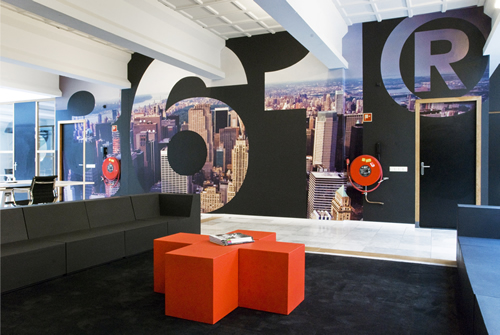

Werken bij een designstudio! Hoe is dat?
Aan de Vasumweg 58 in Amsterdam Noord is het bedrijf Tomorrow Design gevestigd. Daar zijn ze bezig met het ontwerpen van allerlei soorten drukwerk, websites, mobile applications, verpakkingen en af en toe ook video’s. Maar voornamelijk drukwerk zoals verpakkingen, magazines, boeken, flyers, posters en huisstijl onderdelen (denk aan visitekaartjes bijvoorbeeld).
Tomorrow Design doet al een flink aantal jaren actief mee in de designwereld en is opgericht in 2006 door art director Hans Rietveld en algemeen directeur John Berghoff. Ze beweren dat zij de zogenoemde 361 graden designfilosofie toepassen op al hun werk. Dit houdt in dat er een stap verder nagedacht wordt over ontwerpen. Met 360 gaat het om een rondje (cirkel) maken langs alle onderdelen van het ontwerpproces en vervolgens de laatste 1 graad eraan toe te voegen ( de extra steen die bijgedragen wordt). Dit is vergelijkbaar met een voetbalwedstrijd waar een coach zegt tegen zijn team, “Er tegen aan jongens! Geef 110%!”. Als het dus gaat om een zorgvuldig product afleveren bij de klant dan levert Tomorrow Design de 110% op. Deze vorm van design en productiviteit is goed terug te zien op de werkvloer.
Als je binnenkomt wordt je verwelkomd in een grote open hal/zaal die goed verlicht is door daglicht dat via grote ramen binnen valt. Je ziet ook gelijk de studio aan je linkerzijde met twee grote bureaublokken die bestaan uit 6 individuelle bureau’s. Deze zijn gecombineerd in een grote rechthoekige vorm. Ieder bureau is ongeveer 2 meter in lengte. Dus de lange zijde van elk bureaublok is dan 6 meter. Aan elk bureaublok werken 6 mensen. Er werken 9 designers, 2 stagiaires en 1 art director. Er zijn geen scheidingswanden in het pand. Zo is het een open werkruimte waar iedereen ook open en eerlijk tegenover elkaar is.
Verder links zie je een lange lunchtafel en de keuken. Elke pauze wordt er dan ook gezamenlijk geluncht met het hele bedrijf, inclusief de directeuren Hans en John. Erg gezellig, want we zitten gezamenlijk aan tafel te genieten van de lunch. Dit is erg goed voor de teamspirit en zo voelt niemand zich buitengesloten. Elke werknemer is even belangrijk!
Rechts, voorbij de studio staan banken opgesteld in een hoekige ‘U’ vorm. Waar allerlei soorten bedrijfsgerelateerde zaken besproken worden (zoals de volgende stappen in het ontwerpproces). De banken zien eruit alsof ze van rubber gemaakt zijn en bestaan uit losse delen die in een ‘U’ vorm zijn opgesteld (denk aan lego, waar je de losse delen samen kan stellen in elke gewenste vorm). Het ziet er dan ook erg speels en losjes uit. Het zit ook nog eens erg comfortabel.
Nog meer rechts zie je weer dezelfde bureaublokken als bij de studio maar nu slecht één blok. Hier zit de algemeen directeur John Berghoff met zijn office manager, project manager, sale en marketing managers.
Aan het einde van de hal/zaal (rechts) zie je de enige gesloten ruimte. Dit is de ruimte waar presentaties aan klanten worden gegeven en privézaken besproken worden. Je kan wel iedereen zien die in deze ruimte aan praten is, want de wanden zijn geheel van glas gemaakt. Zo hou je toch nog wat openheid ondanks dat het een gesloten ruimte is. Er is geprobeerd in de gehele werkruimte is een soort openheid te creëren die iedereen verwelkomt en niemand buitengesloten laat voelen.
"Ze praten dan over ‘TGIF’ (Thank god it’s friday). Iedere week zijn er twee mensen die beslissen wat ze dan gaan doen." -Jarno Verhoogt
Opvallend is ook dat alle werknemers er representatief uitzien. Keurig verzorgd en gekleed! Vooral de designers in de studio zien er uit als echte ontwerpers. Soms wat alternatief zoals een apart hoedje, maar nooit slordig. Het zijn stijlvolle mensen.
Het zijn allemaal keurige mensen en je kon zien dat iedereen het erg goed kon vinden met elkaar. Er werd vaak goed gelachen en iedereen sprak ABN (Algemeen Beschaafd Nederlands), maar er waren er twee die afkomstig waren uit Noord-Brabant en een hint was accent hadden. Maaike (een van de designers, geboren en getogen Amsterdammer) hoorde je dan ook vaak grappen en grollen over de twee Brabanders. Nooit op een kwade manier en zelf vonden ze het ook leuk. Altijd een grapje hier en daar met elkaar. De stemming in het team zit er dan ook elke dag goed in.
Die zit er zo goed in, omdat ze elke vrijdag wat leuks gaan doen na het werk. Ze praten dan over ‘TGIF’ (Thank god it’s friday). Iedere week zijn er twee mensen die beslissen wat ze dan gaan doen. Deze week mochten Anne-Celine en Maaike (allebei designers) beslissen. Het was op naar een tapasbar midden in de Jordaan. Een aantal zijn met de fiets vertrokken naar de locatie en de anderen met OV of auto. Eenmaal aangekomen blijkt dat er een aantal restaurants vol zitten, maar na 20 minuten vonden ze er een die genoeg plek had. Het werd een luidruchtige avond met veel humor, heerlijk eten en veel drankjes. Aan het einde van alle tapashapjes was het op naar een kroeg om de avond voort te zetten. Een aantal haakte helaas wel af, want die waren met de auto. Het was een gezellige en gekke avond in de kroeg waar ze nog tot 12 uur zijn gebleven.
Je kan goed zien dat deze groep niet elkaar ziet als alleen maar collega’s, maar ook echt als een hechte vriendengroep. Zo is het dan ook op de werkvloer. Iedereen heeft het dagelijks naar zijn zin en de productiviteit zit er goed in.
Tomorrow Design is echt een creatief en sfeervol bedrijf. Je kunt ook zien dat er werk wordt opgeleverd waarbij erg goed is samengewerkt. De 110% zit er altijd in en er is dan ook geen gaatje te vinden in de cirkel die 361 graden heeft.